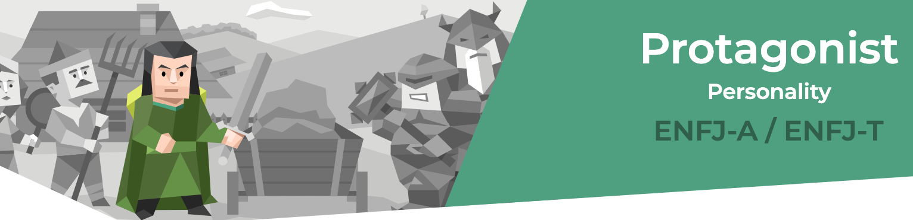
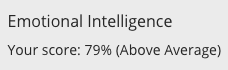
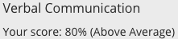
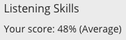
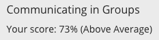
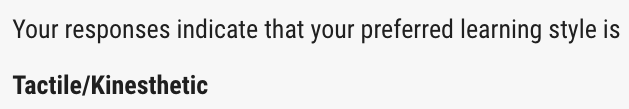

PERSONALITY ANALYSIS
Myers-Briggs Results
(16personalities.com)
Interpersonal Skill Assessment
   (www.skillsyouneed.com)
Learning Style Test
(www.how-to-study.com/)
Analysis
I did three assessments. My Myers-Briggs assessment was ENJF-T. I have done this test once before in the past and more recently at work, and I got the same results both times. I also did an Interpersonal Skill assessment which assessed my soft skills. Surprisingly, I had a high EQ and doing my Learning Style Test, I had tactile/kinesthetic learning patterns. I feel like this in an accurate snapshot of my personality. I am very empathetic towards others. This can be a beneficial trait in promoting the cohesiveness in a team.
Looking at my learning style test, I came out to be a more of tactile/kinesthetic learner. I prefer learning things that I can physically interact with. This might be difficult in an online group setting as I might lose interest if I cannot engage with it.
Forming a team might be difficult for me. When looking at my interpersonal skills, I may come across as too extroverted and domineering. The 48% on my listening skills means I could potentially struggle to take constructive feedback. I can be too sensitive. Overall, if I would do best informing a team if I had to build something from scratch and I had constant conversations with others. I would likely prosper in a more agile project